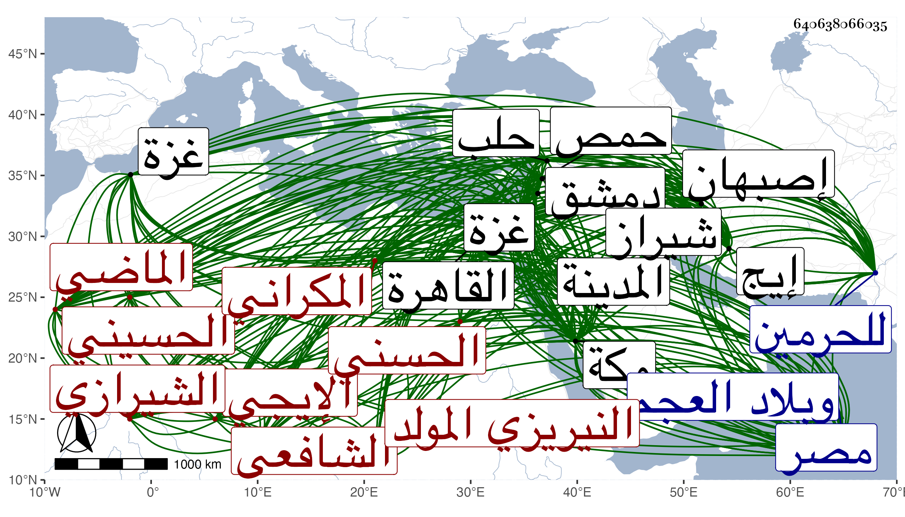

0902Sakhawi.DawLamic.ITO20230111-ara1.EIS1600.640638066035
Biography ID: 640638066035
572
محمد بن محمد بن محمد بن عبد الله بن محمد بن عبد الله بن هادي بن محمد السيد العلاء أبو عبيد الله بن السيد عفيف الدين أبي بكر الحسيني الحسني المكراني الأصل النيريزي المولد الإيجي الشيرازي الشافعي الماضي أبوه وابنه ويعرف بابن عفيف الدين . ولد في ذي القعدة سنة أربع عشرة وثمانمائة بنيزيز بكسر النون على المعتمد وآخره زاي بلدة من أعمال شبنكالة بالقرن من إيج بهمزة ممالة بعدها تحتانية ساكنة وانتقل منها وهو صغير إلى إيج وصار يتردد بينها وبين شيراز وهما متقاربتان وكانت إقامته تحت كنف أبيهوعليه اشتغل وبه تدرب وكذا أخذ عن عمه الصفي فاختص به كثيرا وعظمت رغبته في ملازمته والتهذب به وسمع عليهما وعلى جده لأمه السيد جلال الدين عبد الله بن القطب محمد وناصر الدين أنس بن الشرف محمود الفركي الشافعي وصافح خاله السيد الجمال محمد بن الجلال عبد الله الحسني وأخذ عن خاله الآخر السيد الشهاب أحمد وسعد بن نظام الكازروني وأذن له في الإفتاء وسمع عليهما وكذا سمع من الشيخ أحمد بن علي بن محمد السجستاني الحنفي وأخذ أيضا عن شهاب الإسلام الكرماني قدم عليهم شيراز وأصيل الدين الدهقلي وسمع بأصبهان من مولانا شرف الدين حسن الأصبهاني ولقي بتبريز المحيوي التبريزي المعمر أحد أصحاب الزين الخافي وبغيرها المولي محمد التاوكاني وأجاز له ابن الجزري والشرف الجرهي والزين الخوافي وعبد الرحيم الصديقي والبرهان الحلبي وابن ناصر الدين وابن رسلان في آخرين منهم البساطي وابن نصر الله الحنبلي والحناوي والزركشي والمقريزي وناصر الدين الفاقوسي وابن خطيب الناصرية والجمال عبد الله بن جماعة وعائشة الحنبلية وأكثر التردد للحرمين والمجاورة بهما وسمع بمكة من البدر حسين الأهدل وأبي الفتح المراغي ولبس منه الخرقة بالمدينة من المحب المطري وأذن له في الإقراء والإفتاء وبحلب من ابن الشماع وبحمص من الشهاب أحمد بن البهلوان وبدمشق من التقي بن قاضي شهبة وأذن له في الإفتاء والباعوني والبرهان وعبد الرحمن بن داود وعبد الرحمن بن الشيخ خليل والنظام بن مفلح وببيت المقدس من أبي بكر بن أبي الوفا والزين ماهر وأبي بكر القلقشندي وبغزة من ناصر الدين الأياسي وبالقاهرة من شيخنا وهو كان قصده بالرحلة وسمع منه وعليه بقراءتي أشياء ، وبالغ شيخنا في إكرامه وأتحفه ببعض تصانيفه ومن العلم البلقيني وبحث معهما وأذن له في التدريس ومن العز بن الفرات والزين البوتيجي والبدر النسابة وأبي الفتح الفوي والزين قاسم الحنفي ولقي بها وبغيرها جماعة آخرين فكان ممن لقيه بهرموز النور أبا الفتوح الطاوسي ، وأكثر من السياحة فيما بين مكة والمدينة والديار المصرية وبلاد العجم وزار بيت المقدس غير مرة وبلد الخليل ، وتكرر قدومه القاهرة ونزل في غير مرة منها بخلوة البهاء بن خليل من سطح جامع الحاكم وتكلم مع رئيس المؤذنين به بل وبجامع الأزهر في التحرز في وقت الأذان لا سيما المغرب وضاقت صدورهم بسبب ذلك وتكلموا فيه بما لا يليق وكثر تردد عظماء المملكة وأعيانها إليه وخطبه كل من الأشرف أينال والظاهر خشقدم للقيه فاجتمع بهما ووعظهما ، واشتدت نفرته من البقاعي بحيث ظهر له ذلك منه وأخذ عنه بعض الفضلاء والتمس منه المناوي الكتابة في مسئلة الطلاق الواقعة في أول أيام المكيني ليستظهر به فما وافق على الكتابة واقتصر على اللفظ مع إهداء المناوي له ما كتبه على مختصر المزني وهو في نحو ثلاث مجلدات ورام جانبك الجداوي مناكدته وكذا جوهر الساقي فأخذهما الله وظهر فيهما مصداق قول عمه عنه أنه الترياق المجرب ما تعرض له أحد فأفلح وكذا من كراماته عدم تمكن من كان قيامه في هدم الكنيسة الحادثة بالقدس على غير وفق غرضه من التعرض له بمكروه مع تحركه لذلك وخوف أحبابه عليه من وقوع شيء لا سيما والعلاء يبدو منه في حقهم من الكلمات النهايات . وبالجملة فهو إمام علامة أوقاته مستغرقة في العبادة مديم الصيام والقيام والحرص على الأوراد وابتاع السنة وعدم التبسط في المأكل ونحوها على طريق السلف راغب في الأمر بالمعروف والنهي عن المنكر لا يهاب في الصدع بذلك أحدا ولو عظم غير منفك عن قيام الليل حتى في السفر شديد الرغبة في كتب الحديث وضبط ألفاظه وأسماء رجاله حتى كثر التماسه مني لتحصيل ما صنفته أو جمعته بل التمس معي تخريج أربعي الصوفية للسلمي والعادلين لأبي نعيم وغير ذلك مما يحتاج إلهي وكان لا يقدم علي أحدا . وقد جمع تصانيف مقامه أعلى منها ونظم المقبول وغيره وبينت من ذلك كله في معجمي أشياء ولم يزل على جلالته ومجاهدته في العبادة واقتفاء السنة حتى مات بمكة في آخر ليلة السبت رابع عشر جمادى الأولى سنة ثمانين وصلي عليه من الغد ودفن عند أبيه وعمه وكان قد تهيأ قبل بأشهر إلى بلاده وسافر من مكة لجدة وأشحن أمتعته ببعض المراكب بل ونزل هو المركب أيضا وما بقي إلا السفر في تلك الليلة فبدا له تركه وطلع بنفسه وبأمتعته فلم يلبث أن توعك حتى مات وكانت الخيرة في ترك سفره وعد ذلك من كراماته رحمه الله وإيانا .
